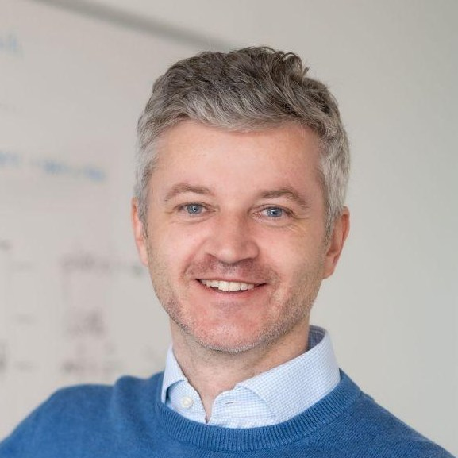
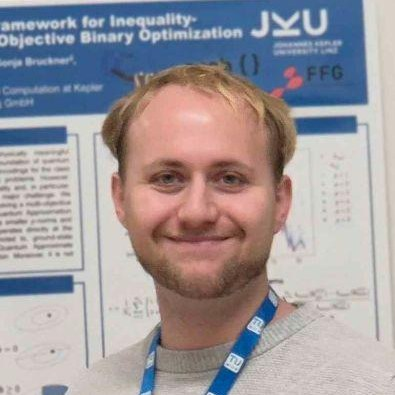
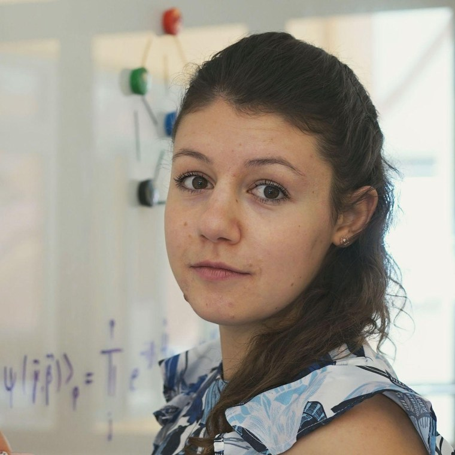
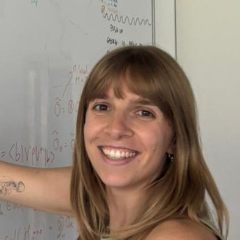
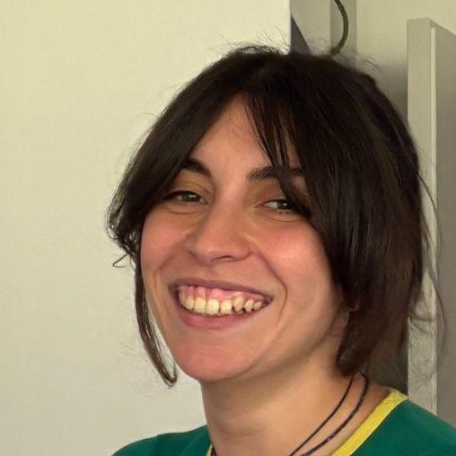
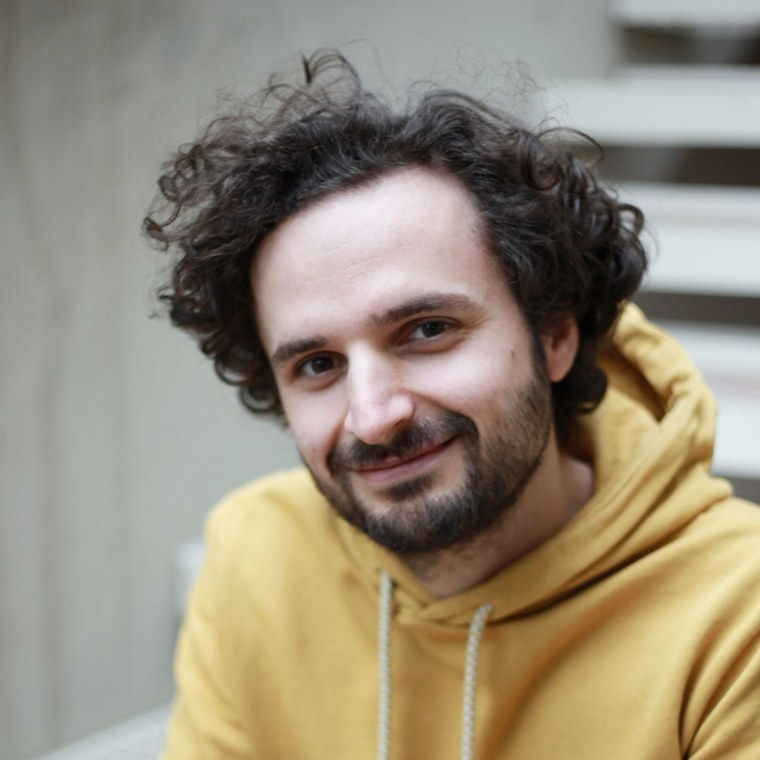
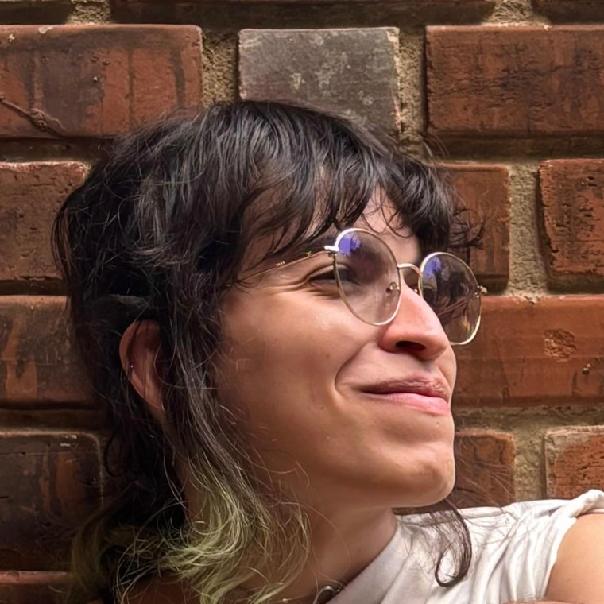
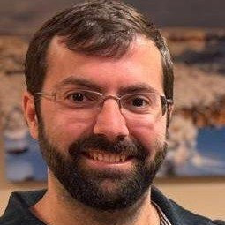

Station 4
Meet the Team
Hinter der Forschung stecken Menschen, die genauso angefangen haben wie du: neugierig und ohne Plan.
Unser Team
Tippe eine Person an und erfahre in ihren eigenen Worten, woran sie gerade forscht.
 Alexander Mandl
Quantum Optimization
The shortest route, out of 61 quadrillion.
Alexander Mandl
Quantum Optimization
The shortest route, out of 61 quadrillion.

Johannes Kofler Senior Lecturer Teaching quantum – and teaching machines how to measure it Jadwiga Wilkens
Quantum Computing
Characterising Quantum Errors in a Quantum Computer
Jadwiga Wilkens
Quantum Computing
Characterising Quantum Errors in a Quantum Computer

Sebastian Egginger Quantum Sensing and Quantum Computing Building Better Microscopes Richard Kueng
Head of Department
scalable interfaces for quantum-classical computing and learning
Richard Kueng
Head of Department
scalable interfaces for quantum-classical computing and learning

Kristina Kirova Quantum Computing Beyond bits, and beyond the curriculum. Patrick Fath Integrated Circuit Design for Wireless Biosignal Acquisition (Microelectronics) Listening to the Body
Elena Giovannini Quantum computing More copies, more answers. Filipa Peres
Quantum computing
Plugging quantum processors into the computers we already have.
Filipa Peres
Quantum computing
Plugging quantum processors into the computers we already have.

Marwa Marso Quantum Computing How much can we learn from a glimpse? Mario Ullrich Privatdozent & Senior Scientist · Dept. of Quantum Computing and Institute of Analysis How Much Do You Need to Know?
Alexander Ploier The Intersection of Science, Science Communication, and Art Do people just put “quantum” in front of everything to sound smart?
Luna Lima Keller Quantum Computing What is magical about Quantum Computing…
Diego García Martín Postdoctoral researcher Figuring out the actual power of quantum computers. Nina Brandl Quantum Computing Main quest: simulate quantum circuits Tobias Pirkl Quantum Computing and Complexity Theory Packing my thingsWas wir hier tun
Sprich uns an
Ernsthaft: Wir stehen den ganzen Tag hier und freuen uns über jede
Frage. Auch über „ich versteh gar nichts“ — das ist bei diesem
Thema die ehrlichste und häufigste Reaktion.